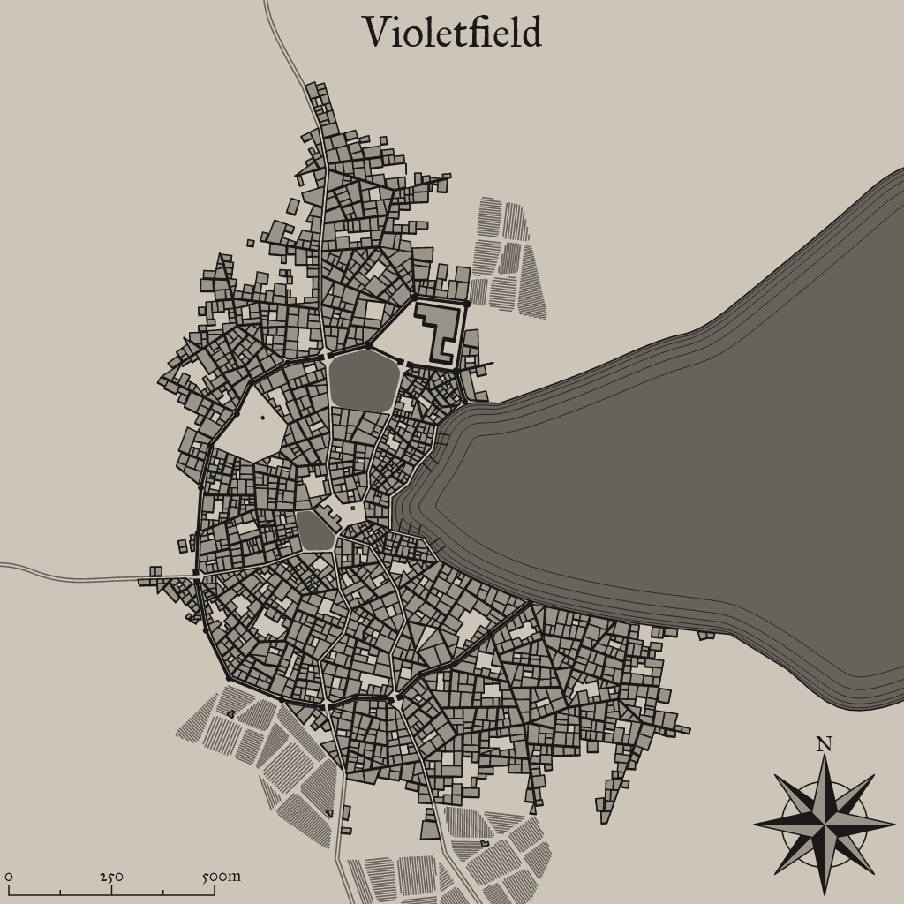

Violetfield
A mystical settlement in a fantastical world

Background Flavor
This location was once a training ground for the gladiatorial combat of a long-fallen empire. At the outskirts of town is an ancient and crumbling arena, and 4 times a year the village holds events showcasing feats of strength and athletic mastery.
1
Settlement Features
Violetfield is a large town 2,001-5,000 located in the mountain region of the areas greater grassland. The settlement seems to be relatively young. Violetfield and the local surroundings are under the control of a counsel of elders.
Demographics
- Name: Violetfield
- Size: Large Town 2,001-5,000
- Real population: 2475
- Population Density: Ample
- Number by race: Human 40%, Dwarf 10%, Elf 10%, Gnome 10%, Halfling 10%, Half-elf 15%, Half-orc 5%,
- Wealth: Poor
- Age: Relatively Young
- Alignment: True Neutral
- Government Type: A Counsel Of Elders - The oldest men (or women) in the settlement gather to listen to domestic and societal cases and pass judgment and give solutions if required.
- Settlement Trait: Gambling
- Number Of Wards: 30
- Number of Districts: 3
Industry and Economy
- Primary Raw Materials: Fishing
- Shops of Note: Stable, Brewery.
- Number Of Inns/Taverns: 2
- Inns/Taverns of Note: The Bather and The Wheelwright Tavern, The Hunter.
Districts
South Naippais
Plaza: Well, fountain, stele, statue, piazza, plinth, monument, town square, park, plaza, grand arcade.
Upper West Spadlork
Ruling: Town hall, lord’s manor, palace.
Newup Row
Law and Order: Guardhouse, watchtower, gallows, gaol, prison, courthouse.
Taverns / Inns
The Bather and The Wheelwright Tavern
Location
Upper West Spadlork
Description
From the outside it looks homey, humble and warm. Logs and wooden pillars make up most of the building's outer structure.
Innkeeper
Bob
Menu
- Veal sweetbreads, Sharp cheese, Leeks, Peach (2 gp).
- Pork liver, Seaweed, Succotash, Rice, Fruitcake (2 sp).
- Stewed Mutton and Whey Cheese, Tankard of Perry (8 cp)
- Boiled Eggs and Buckwheat Bread, Tankard of Mead (11 cp)
- Kito's Spiced Potatos (7 cp)
The Hunter
Location
South Naippais
Description
The tavern itself is almost completely abandoned. The few people inside you'd like to stay away from, but whoever they are, it's about the clearest sign you can get, telling you you don't belong.
Innkeeper
Bob
Menu
- Stewed Sausage and Soft Cheese, Tankard of Stout (8 cp)
- Soft cheese, Pomegranite, Corn pone (8 sp).
- Roasted Cabbage, Mug of Stout (4 cp)
- Mixed grill, Collard greens, Chick peas, Rice, Plum pudding (2 gp).
- Mutton, Lettuce and Tomato (5 sp)
2